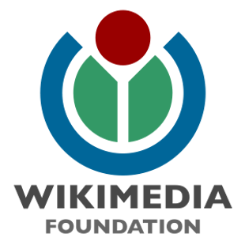
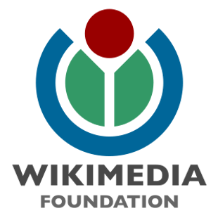
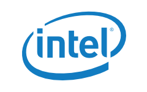
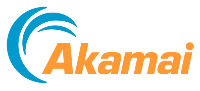
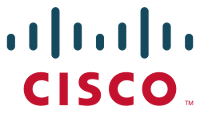
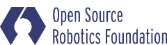
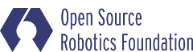

FOSS Outreach Program helps people from groups underrepresented in free and open source software get involved. We provide a supportive community for beginning to contribute any time throughout the year and offer focused internship opportunities twice a year with a number of free software organizations.
This program is an expansion of the Outreach Program for Women (OPW), which has been engaging women (cis and trans) and genderqueer. As a pilot for the expansion, in addition to women and genderqueer, this round is open to all participants of the Ascend Project regardless of gender.
Apply
The next round of the Outreach Program internships will have an application deadline on March 24, 2015, and internship dates from May 25 to August 25. Coding, design, documentation and other projects will be available. The applicants will be asked to select a project with one of the participating organizations and collaborate with a mentor listed for that project to make a relevant contribution to the project during the application process. The organizations that will participate in the next round have not yet been determined, but starting to contribute to one of the organizations that participated in the past will help prepare to apply for an internship with any organization. Many of the mentors participating in the program are happy to offer informal mentorship any time throughout the year. Detailed information about the background for the program, requirements for participants, how to select a project, and how to make a contribution is available.
Applicants who are students interested in coding projects will be encouraged to apply for Google Summer of Code as well. The administrators of both programs will coordinate to accept the top applicants for one of the programs.
The accepted participants work remotely, while being guided by their mentor, and receive $5,500 stipend. It's expected that the participants are able to have the internship work be a primary focus during the internship dates and spend 40 hours a week on it.
Learn more!Participants
44 interns were accepted for December 2014 - March 2015 round of the Outreach Program!
Find out who is participating in this round!Sponsors
The Outreach Program is organized by the GNOME Foundation. The internships in the December 2014 - March 2015 round are generously sponsored by the following organizations and companies:
Equalizers
 

Promoters
Includers
 
 



 Become a sponsor!
Become a sponsor!
Partners
GNOME Foundation provides an organizational home for the Outreach Program with administrative and infrastructure support.
Red Hat supports the Outreach Program by contributing its employee time towards the organization of the program.
Software Freedom Conservancy supports the Outreach Program by contributing its employee time towards the organization of the program.
About
The Outreach Program for Women (OPW) was inspired by Google's Summer of Code and by how few women applied for it. The GNOME Foundation first started the OPW with one round in 2006, and then resumed the effort in 2010 with rounds organized twice a year. In the May-August 2012 round, the Software Freedom Conservancy joined the OPW with one internship with the Twisted project. In the January-April 2013 round, many other free and open source organizations joined the program. In the December 2014-March 2015 round, the program was expanded to the more general Outreach Program, which engages people from various underrepresented groups.
This program is a welcoming link that connects talented and passionate newcomers with people working in free and open source software and guides them through their first contribution. Through the Outreach Program, participants learn how exciting and valuable work on software freedom can be, while helping us to build a more inclusive community.
Follow @fossopw on Twitter to get the latest news.